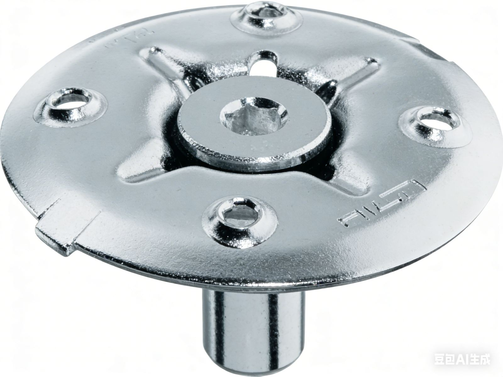

Hold-Down Clips & Grating Fixings: What to Put on the Drawing
Grating panels only work as a system when they stay seated on supports under traffic, wind uplift on open frames, and maintenance pulls. This guide translates common hardware names into decisions you can document once—so quotations and site work stay aligned.

Why fixings belong in the same package as mesh selection
Load tables answer bending in the bearing bars. Fixings answer whether the panel transfers those reactions into the beam or angle without lifting, sliding, or rattling. A correct G325/30/100 panel can still fail in service if clips are missing on an edge exposed to forklift wheel steering or if bolt holes clash with cross bar positions.
Start from the support family: open-beam flange, angle lintel, concrete embed, or trench frame. Then pick hardware that matches flange thickness, edge clearance, and coating system (hot-dip galvanizing after fabrication is the usual baseline for export packages).
Saddle clips: when they are the default
Saddle clips straddle the lower flange and bear on the underside of bearing bar feet, often completed with a bolt through the open mesh. They are widely understood by contractors, work on many beam sizes when saddle height matches flange thickness bands, and are easy to inspect from below on pipe racks.
Document: clip model or drawing detail, bolt grade and diameter, maximum spacing along unsupported edges, and any requirement for anti-vibration washers. If your standard is “NAAMM-style layout,” say so and cross-check against your owner’s maintenance rules.
Hold-down (quick) clips: when top access wins
Hold-down clips (sometimes sold as “M clips” or quick clips depending on region) clamp the grating to the support from above or the side with controlled torque. They suit locations where underside access is tight, where you want uniform top-plane appearance, or where you are pairing with banded panels and need predictable bolt paths.
Document: torque range if the manufacturer publishes one, spacing, and orientation relative to bearing bars. Torque that is too low allows movement; too high can damage mesh or coatings.
Panel joining and edge banding
Long runs often need panel joining clips to align adjacent leaves and share load at seams. Pair mechanical joining with banding on cut edges so bearing bars end cleanly and loads do not shred unfinished toes. For stair flights, coordinate with toe plates and tread nosing so fixings do not conflict with nosings specified under project codes.
How this ties to trench covers and platforms
On trench covers, the frame usually provides location; clips or bolts may be part of a lockable hardware set. On elevated platforms, uplift from wind on partially enclosed structures can govern clip counts—do not assume walking loads alone. When in doubt, ask the supplier to mark a recommended clip pattern on the shop drawing for each panel size you order.
Related reading and tools
Use the engineering hub installation and fixings for terminology and typical details. For mesh and span decisions, read how to choose steel grating and load capacity explained. Ready to price clips with panels? Use the RFQ form and attach a beam schedule or marked-up plan.
Frequently asked questions
What is the difference between a saddle clip and a hold-down clip?
Saddle clips usually engage from below the beam flange; hold-down clips often clamp from above or the side with a specified torque. Support geometry and access drive the choice.
How many clips per panel should I specify?
Start from manufacturer or project standards for corners and edges, then add intermediates for wide panels, vibration, or uplift. The goal is zero lift-off under defined loads.
Do fixings change the structural capacity of the grating?
No—capacity still comes from bars and span. Fixings keep the designed system from moving so that capacity can be used.
Can I weld grating to supports instead of clips?
Sometimes, but it affects removal, galvanizing touch-up, and fatigue. State welding explicitly on drawings if it overrides clip-based schemes.